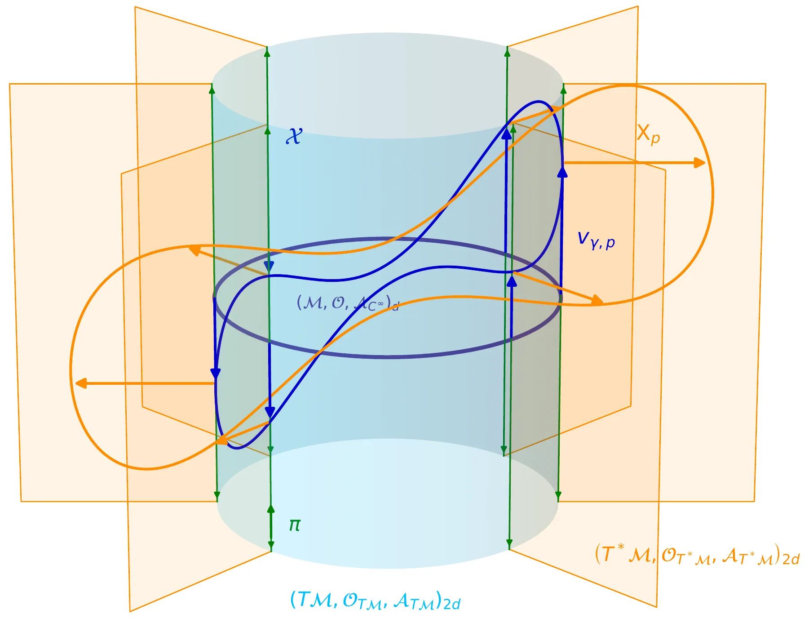

5.2 Covector Fields
Chapter 5 • Fields
5.2 Covector Fields
The (smooth) cotangent bundle upon the (smooth) manifold \((\mathcal{M}, \mathcal{O}, \mathcal{A})\) is: \begin{align*} (T^*\mathcal{M}, \mathcal{O}_{T^*\mathcal{M}}, \mathcal{A}_{T^*\mathcal{M}}) \xrightarrow[]{\pi^*} (\mathcal{M}, \mathcal{O}, \mathcal{A}) \end{align*} Here we are considering the following definitions:
\(T^*\mathcal{M}\) is the disjoint union of cotangent spaces \(T^*_p\mathcal{M}\), i.e., \begin{align*} T^*\mathcal{M} := \dot{\bigcup_{p \in \mathcal{M}}} T^*_p \mathcal{M}. \end{align*}
The projection map, \(\pi^*\), is given by \begin{align*} \pi^* : T^*\mathcal{M} &\to \mathcal{M} \\ \mathsf{X}_p &\mapsto \pi^* (\mathsf{X}_p) := p, \end{align*} where \( p \) is the unique point such that \( \mathsf{X}_p \in T^*_p \mathcal{M} \).
The bundle chart maps. For every chart \((\mathcal{U}, \mathscr{X}) \in \mathcal{A}\), let \(T^*\mathcal{U} \coloneqq \operatorname{preim}_{\pi^*}(\mathcal{U})\) and define \begin{align*} \xi^*_{\mathscr{X}} : T^*\mathcal{U} &\longrightarrow \mathscr{X}(\mathcal{U}) \times \mathbb{R}^{d} \subseteq \mathbb{R}^{2d} \\ \mathsf{X}_p &\longmapsto \xi^*_{\mathscr{X}} (\mathsf{X}_p), \end{align*} where \begin{align*} \xi^*_{\mathscr{X}} (\mathsf{X}_p) := \big( \underbrace{..., (\mathscr{X}^i \circ \pi^*)(\mathsf{X}_p), ...}_{\substack{i\in [1, d] \text{ terms.}\\ \text{Chart coordinates w.r.t. } (\mathcal{U}, \mathscr{X}) \\ \text{for the base point } p \text{ of } \mathsf{X}_p}} ; \underbrace{..., \mathsf{X}_p\left(\left(\frac{\partial}{\partial \mathscr{X}^j} \right)_{p}\right), ... }_{\substack{j\in [1, d] \text{ terms.}\\ \text{Components of } \mathsf{X}_p \text{ w.r.t. the}\\ \text{dual chart-induced basis}}} \big) = \big( ..., \mathscr{X}^i(p), ...\, ; ..., \mathtt{x}^p_j, ... \big), \end{align*} a bijection onto the open set \(\mathscr{X}(\mathcal{U}) \times \mathbb{R}^d\), with inverse \begin{align*} {\xi^*_{\mathscr{X}}}^{-1} : \mathscr{X}(\mathcal{U}) \times \mathbb{R}^{d} &\longrightarrow T^*\mathcal{U} \\ (\underbrace{..., \alpha^i, ...}_{i\in [1, d]} ; \underbrace{..., \beta_j, ...}_{j\in [1, d]}) &\longmapsto \sum_{k=1}^{d} \beta_k \, (d\mathscr{X}^{k})_{p=\mathscr{X}^{-1}\left(\dots, \alpha^i, \dots \right)}. \end{align*} Given a second chart \((\mathcal{V}, \mathscr{Y}) \in \mathcal{A}\) and \(p = \mathscr{X}^{-1}(\alpha)\), using \((d\mathscr{X}^k)_p\big( (\partial / \partial \mathscr{Y}^j)_p \big) = \left( \textrm{\runic ᛞ}_{\mathcal{U}\mathcal{V}} \right)^k_{j}\big( \mathscr{Y}(p) \big)\) and \(\mathscr{Y}(p) = \textrm{\runic ᛖ}_{\mathcal{U}\mathcal{V}}(\alpha)\), \begin{align*} (\xi^*_{\mathscr{Y}} \circ {\xi^*_{\mathscr{X}}}^{-1})(\alpha \,;\, \beta) = \Big( \textrm{\runic ᛖ}_{\mathcal{U}\mathcal{V}}(\alpha) \,;\, \dots, \sum_{k=1}^{d} \left( \textrm{\runic ᛞ}_{\mathcal{U}\mathcal{V}} \right)^k_{j}\big( \textrm{\runic ᛖ}_{\mathcal{U}\mathcal{V}}(\alpha) \big) \, \beta_k, \dots \Big), \end{align*} which is \(C^\infty\), being built from the smooth maps \(\textrm{\runic ᛖ}_{\mathcal{U}\mathcal{V}}\) and the entries of \(\textrm{\runic ᛞ}_{\mathcal{U}\mathcal{V}}\), and linear in \(\beta\). Fibre coordinates now change with the inverse Jacobian, as the covector components of Subsection 4.2.1.
The topology \(\mathcal{O}_{T^*\mathcal{M}}\) is defined exactly as for the tangent bundle, as the one turning every bundle chart map into a homeomorphism, \begin{align*} \mathcal{O}_{T^*\mathcal{M}} \coloneqq \Big\{ W \subseteq T^*\mathcal{M} \;\Big|\; \xi^*_{\mathscr{X}}(W \cap T^*\mathcal{U}) \in \mathcal{O}_{\mathbb{R}^{2d}} \;\; \forall \, (\mathcal{U}, \mathscr{X}) \in \mathcal{A} \Big\}, \end{align*} and the proof of Appendix B.7 applies verbatim, with \(\xi_{\mathscr{X}}\) replaced by \(\xi^*_{\mathscr{X}}\).
The smooth atlas \(\mathcal{A}_{T^*\mathcal{M}} \coloneqq \{ (T^*\mathcal{U}, \xi^*_{\mathscr{X}}) \mid (\mathcal{U}, \mathscr{X}) \in \mathcal{A} \}\) is \(C^\infty\)-compatible by the transition computation above, so that \((T^*\mathcal{M}, \mathcal{O}_{T^*\mathcal{M}}, \mathcal{A}_{T^*\mathcal{M}})_{2d}\) is a \(2d\)-dimensional smooth manifold.
A smooth covector field is a smooth section of the cotangent bundle, \begin{align*} \mathsf{X} : \mathcal{M} &\to T^*\mathcal{M} \\ p &\mapsto \mathsf{X}(p) := \mathsf{X}_p, \end{align*} with \((\pi^* \circ \mathsf{X}) = \mathbb{I}_{\mathcal{M}}\), i.e. a smooth assignment of a covector \(\mathsf{X}_p \in T^*_p\mathcal{M}\) to every point \(p \in \mathcal{M}\). As for covectors at a single point, sans-serif capitals \(\mathsf{X}, \mathsf{Y}, \dots\) denote generic covector fields, so that \(\mathsf{X}_p = \mathtt{x}_i^p \cdot (dx^i)_p = \mathtt{y}_i^p \cdot (dy^i)_p\) at every point \(p\) in the corresponding chart domains (Subsection 4.2.2).
The most important examples are the differentials of scalar fields \(f \in C^{\infty}(\mathcal{M})\), \begin{align*} df : \mathcal{M} &\to T^*\mathcal{M} \\ p &\mapsto df(p) := (df)_p, \end{align*} and covector fields of this form, \(\mathsf{X} = df\), are called exact. At a single point there is no difference between the two notions: every covector is the differential of some scalar field, \(\mathsf{X}_p = (df)_p\) (Section 4.2). However, the scalar field \(f\) achieving this depends in general on the point \(p\), and a covector field need not be the differential of a single, globally defined scalar field2.
We will employ the following notation to define the action of a covector field \(\mathsf{X}\) upon a vector field \(\mathcal{X} \in \Gamma T\mathcal{M}\), writing \(\mathcal{X}(p) = v_{\gamma, p}\): \begin{align*} \mathsf{X} : \Gamma T\mathcal{M} &\longrightarrow C^{\infty}(\mathcal{M}) \\ \mathcal{X} &\longmapsto \mathsf{X}\left\lceil \mathcal{X} \right\rfloor \colon \begin{aligned}[t] \mathcal{M} &\longrightarrow \mathbb{R} \\ p &\longmapsto \mathsf{X}\left\lceil \mathcal{X} \right\rfloor(p) \coloneqq \mathsf{X}_p(v_{\gamma, p}). \end{aligned} \end{align*} That is, \(\mathsf{X}\left\lceil \mathcal{X} \right\rfloor\) is itself a scalar field, returning at each point the value of the covector \(\mathsf{X}_p\) on the vector that \(\mathcal{X}\) places there. We can therefore think of a covector field in three equivalent ways, depending on which argument we supply first:
Point first: as a section, eating points \(p \in \mathcal{M}\) and returning covectors \(\mathsf{X}(p) = \mathsf{X}_p \in T^*_p\mathcal{M}\).
Vector field first: as an operator, eating vector fields \(\mathcal{X} \in \Gamma T\mathcal{M}\) and returning, \(C^{\infty}(\mathcal{M})\)-linearly, new scalar fields \(\mathsf{X}\left\lceil \mathcal{X} \right\rfloor \in C^{\infty}(\mathcal{M})\).
Both: once \(\mathcal{X}\) is fixed, \(\mathsf{X}\left\lceil \mathcal{X} \right\rfloor\) eats points \(p \in \mathcal{M}\) and returns the real numbers \(\mathsf{X}\left\lceil \mathcal{X} \right\rfloor(p) \in \mathbb{R}\).
All three readings meet in the same number, \(\mathsf{X}\left\lceil \mathcal{X} \right\rfloor(p) = \mathsf{X}(p)\big(\mathcal{X}(p)\big) = \mathsf{X}_p(v_{\gamma, p})\). For an exact covector field this number equals, by definition of the differential, \(v_{\gamma, p}(f)\); hence \(df\left\lceil \mathcal{X} \right\rfloor = \mathcal{X}\left\lfloor f \right\rceil\).
The \(C^{\infty}(\mathcal{M})\)-module \(\Gamma T^* \mathcal{M}\) is the triplet \((\Gamma T^* \mathcal{M}, \oplus^*_\Gamma, \odot^*_\Gamma)\), built over the same commutative, unitary ring \((C^{\infty}(\mathcal{M}), \oplus_{C^{\infty}}, \odot_{C^{\infty}})\), so that, as for \(\Gamma T\mathcal{M}\), the result is a module rather than a vector space. Here \(\Gamma T^*\mathcal{M} \coloneqq \{\mathsf{X} : \mathcal{M} \to T^*\mathcal{M} \mid \text{smooth covector field}\}\), and, writing \(\mathcal{X}(p) = v_{\gamma, p}\), the operations \(\oplus^*_\Gamma\) (addition) and \(\odot^*_\Gamma\) (s-multiplication) are: \[ \begin{aligned} &\begin{array}{c} \begin{aligned} \oplus^*_\Gamma : \Gamma T^* \mathcal{M} \times \Gamma T^* \mathcal{M} &\longrightarrow \Gamma T^* \mathcal{M} \\ (\mathsf{X}, \mathsf{Y}) &\longmapsto \mathsf{X} \oplus^*_\Gamma \mathsf{Y} \end{aligned} \\[12pt] \begin{aligned} \text{with } (\mathsf{X} \oplus^*_\Gamma \mathsf{Y})\left\lceil \mathcal{X} \right\rfloor(p) &\coloneqq \left(\mathsf{X}\left\lceil \mathcal{X}\right\rfloor \oplus_{C^{\infty}} \mathsf{Y}\left\lceil \mathcal{X}\right\rfloor\right)(p) \\ &= \mathsf{X}_p(v_{\gamma,p}) + \mathsf{Y}_p(v_{\gamma,p}), \end{aligned} \end{array} \quad &\begin{array}{c} \begin{aligned} \odot^*_\Gamma : C^{\infty}(\mathcal{M}) \times \Gamma T^* \mathcal{M} &\longrightarrow \Gamma T^* \mathcal{M} \\ (h, \mathsf{X}) &\longmapsto h \odot^*_\Gamma \mathsf{X} \end{aligned} \\[12pt] \begin{aligned} \text{with } (h \odot^*_\Gamma \mathsf{X})\left\lceil \mathcal{X} \right\rfloor(p) &\coloneqq \left(h \odot_{C^{\infty}} \mathsf{X}\left\lceil \mathcal{X} \right\rfloor\right)(p) \\ &= h(p) \cdot \mathsf{X}_p(v_{\gamma,p}), \end{aligned} \end{array} \end{aligned} \] for all \(h \in C^{\infty}(\mathcal{M})\), \(\mathcal{X} \in \Gamma T\mathcal{M}\) and \(p \in \mathcal{M}\).

Figure 5.2: Tangent and cotangent bundles of the ring of Figure 5.1, drawn in the same ambient space. The tangent fibres are displayed vertically, as before (cylinder, green fibres, \(\pi\)). The cotangent fibres are displayed radially, transverse both to the ring and to the tangent fibres. Because the two directions are transverse, a pair \(\big( v_{\gamma, p}, \mathsf{X}_p \big) \in T_p\mathcal{M} \times T^*_p\mathcal{M}\) can be drawn as a single point. The orange sheets are the planes \(T_p\mathcal{M} \times T^*_p\mathcal{M}\) over six base points, attached along the corresponding tangent fibres. The blue curve is a vector field \(\mathcal{X} \in \Gamma T\mathcal{M}\), with its values \(\mathcal{X}(p) = v_{\gamma, p}\) drawn over those six points. The orange arrows are the values \(\mathsf{X}(p) = \mathsf{X}_p\) of a covector field \(\mathsf{X} \in \Gamma T^*\mathcal{M}\), each drawn from the tip of the vector \(v_{\gamma, p}\) it acts on. The orange curve is the pair of sections \(p \mapsto \big( \mathcal{X}(p), \mathsf{X}(p) \big)\). Dropping its radial displacement gives back \(\mathcal{X}\). Dropping its vertical displacement gives \(\mathsf{X}\) alone, as a section of the total space \(\left( T^*\mathcal{M}, \mathcal{O}_{T^*\mathcal{M}}, \mathcal{A}_{T^*\mathcal{M}} \right)_{2d}\); in this drawing that total space is the horizontal annulus around the ring, not shown.